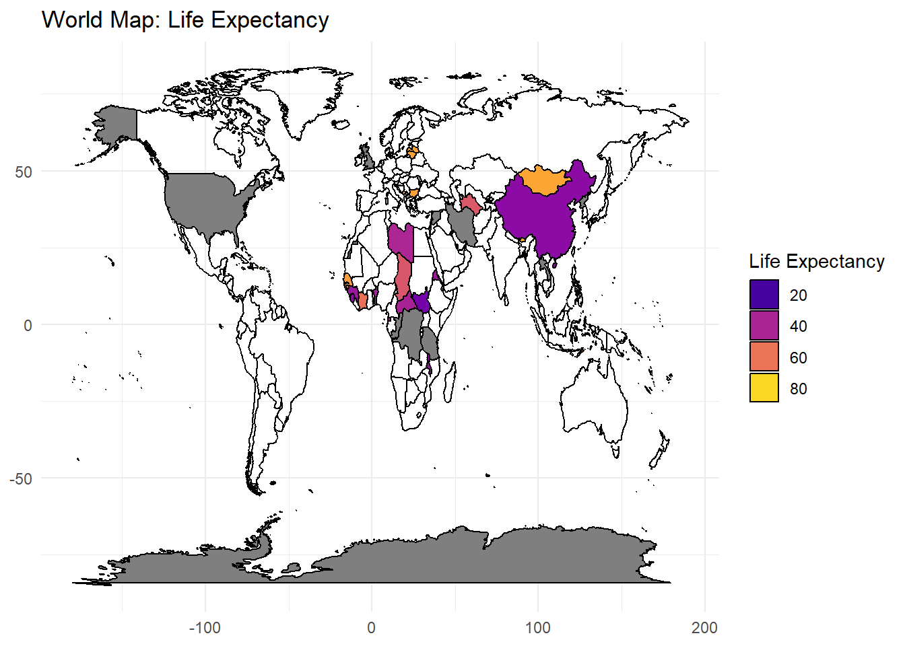
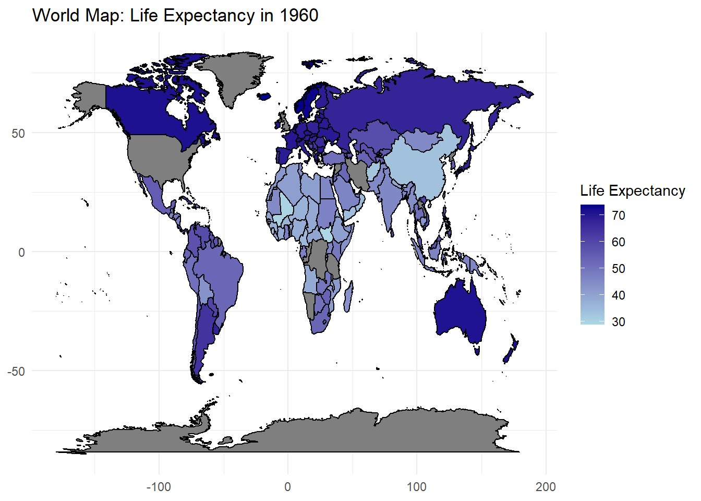
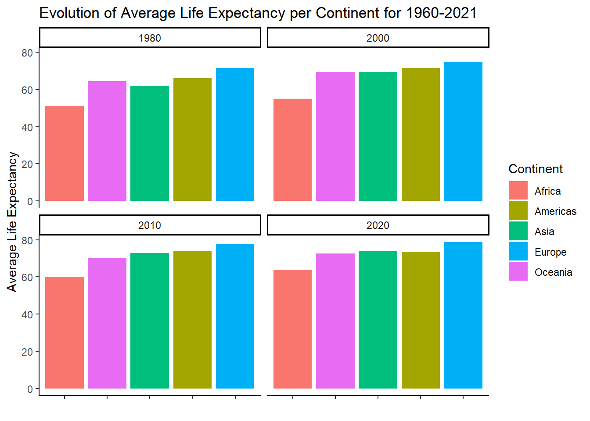
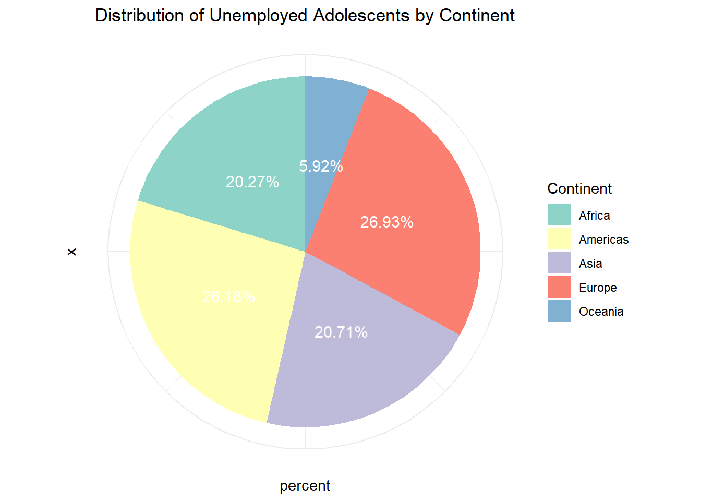
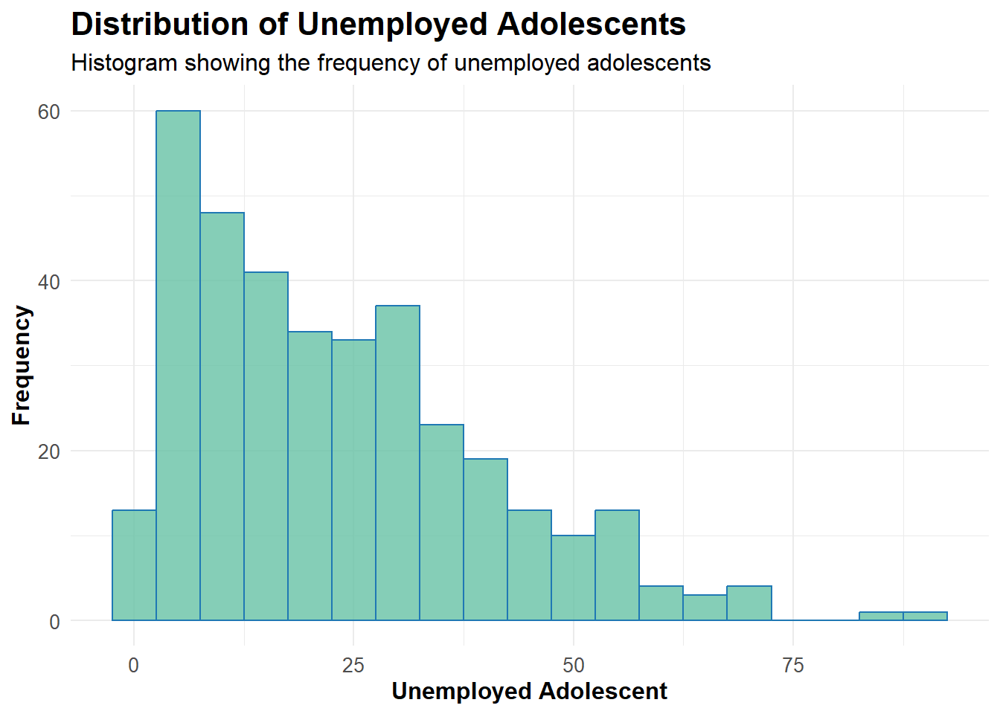
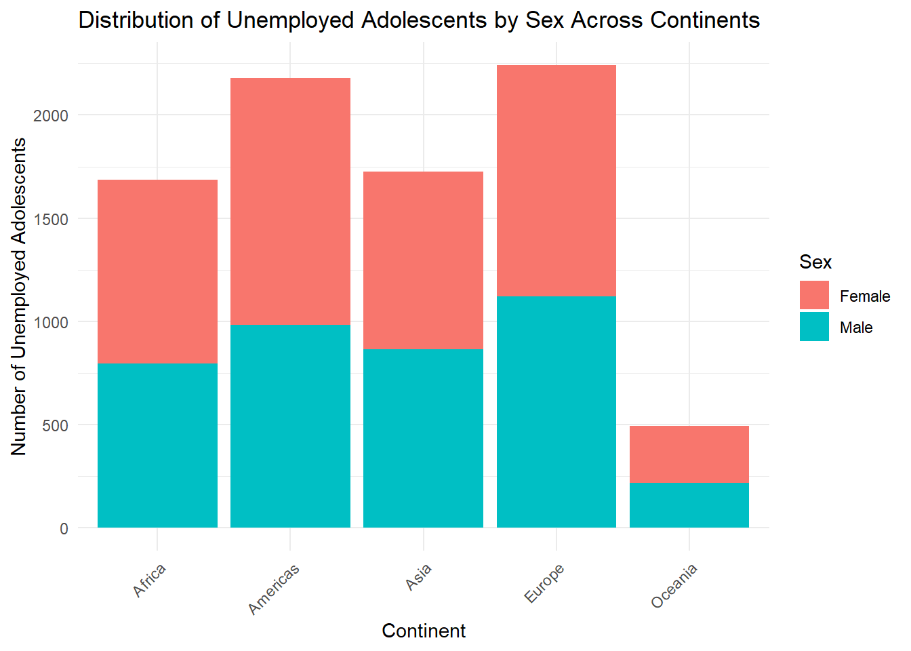
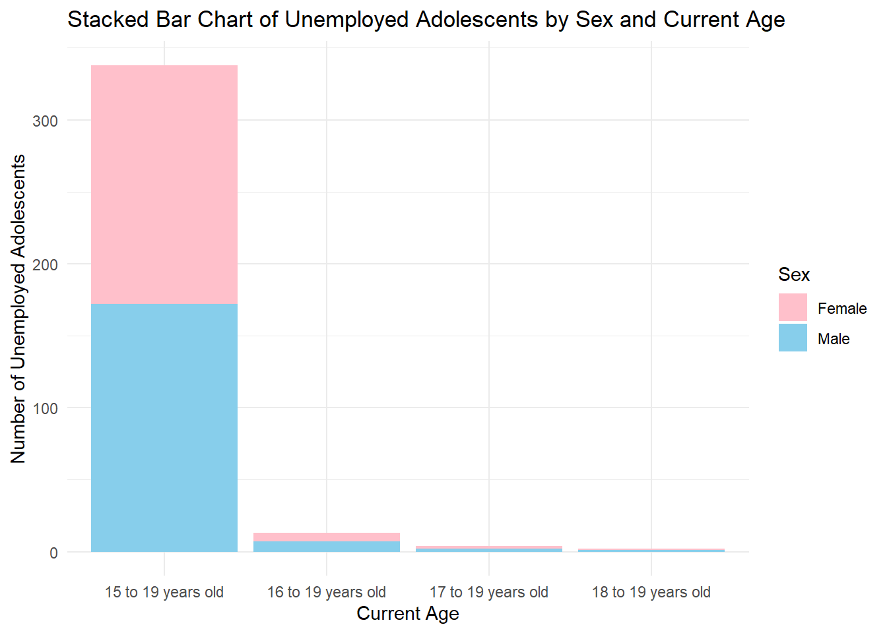

Lost Potential: Exploring Youth Unemployment in the Global Labour Force
From Cradle to Career: The Quirks and Queries of Youth Unemployment
Introduction
Using information from UNICEF indicators, this report explores the intricate world of youth unemployment, concentrating on the Percentage of adolescents (aged 15-19 years) in the labor force who are unemployed. This study aims to explore the complex issues young people encounter while navigating the global labor market by utilizing UNICEF megadata. Policymakers, educators, and stakeholders must all grasp the underlying causes and consequences of the rising youth unemployment rates in many areas. This report looks at the interactions between gender dynamics, countries worldwide, continents, life expectancy and population in an effort to shed light on the obstacles that youth employment faces and investigate viable solutions.
A Journey Through Data Charts
With the utilization of UNICEF data, I have crafted the following charts below to glean insights into the status of unemployed adolescents aged 15 to 19 globally:
- World maps
- Time series
- Scatter plot
- Bar chart
- Pie chart
- Histogram
- Stacked bar chart






Conclusion and Recommendation
Recommendations
- Invest in Education: Allocate resources towards education and skill development programs to equip young people with the necessary tools to succeed in the modern job market.
- Promote Innovation: Foster an environment that encourages innovation and entrepreneurship, creating opportunities for young people to thrive and contribute to economic growth.
- Create Job Opportunities: Implement policies and initiatives aimed at job creation, particularly targeting industries with high potential for youth employment.
- Address Gender Disparities: Develop strategies to address gender imbalances in the workforce, ensuring equal opportunities for all young people.
- Global Collaboration: Foster international collaboration and partnerships to share best practices and resources for combating youth unemployment on a global scale.
Conclusion
The report dismantles the intricate tapestry of socio-economic factors interwoven within the global youth unemployment crisis. While familiar themes like gender disparities and educational inequalities echo through its pages, disparities persist across continents. To effectively tackle this challenge, policymakers must prioritize investments in education and skill development, nurturing an environment conducive to innovation and job creation. By harmonizing efforts and embracing collaborative solutions, we can compose a future where the talents and aspirations of our youth resonate harmoniously with the demands of the modern labor market.
More information
See https://data.unicef.org/ and https://data.unicef.org/indicator-profile/ for more information